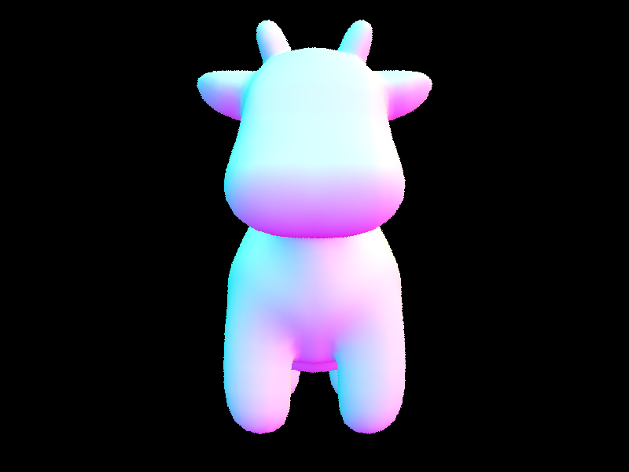
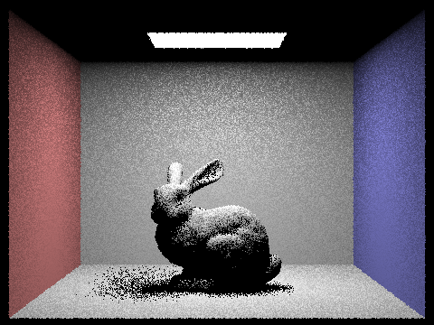
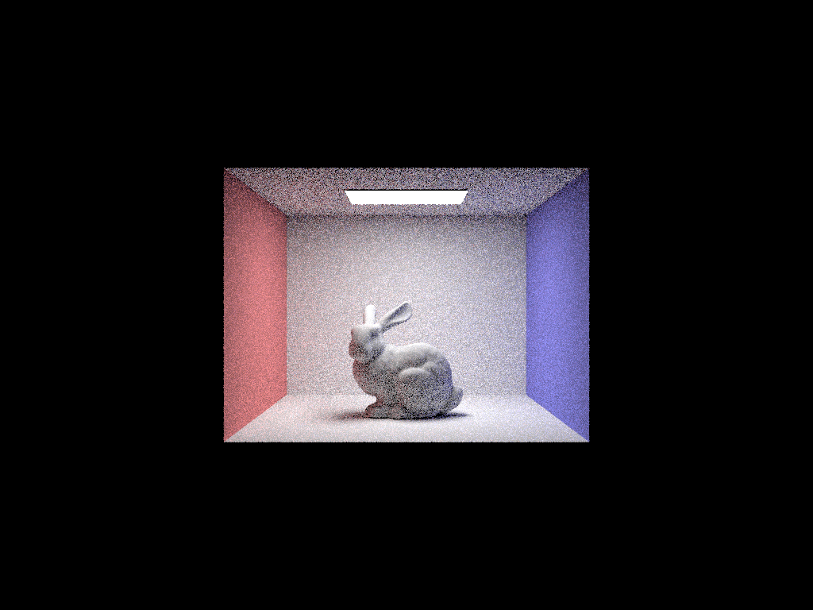

CS184/284A Spring 2025 Homework 1 Write-Up
Link to webpage: https://cal-cs184-student.github.io/hw-webpages-iii/hw3/
Link to GitHub repository: https://github.com/cal-cs184-student/sp25-hw3-yabadabadoo
Overview
In this assignment, I implemented a physically-based ray tracer that simulates the behavior of light to generate realistic images. The core components include ray-scene intersection, bounding volume hierarchies (BVH) for acceleration, direct and global illumination, importance sampling, and adaptive sampling. By incorporating these techniques, the ray tracer efficiently handles complex scenes with improved performance and visual fidelity. One of the most interesting aspects of this project was understanding the impact of different sampling strategies on rendering quality and noise reduction. Implementing BVH highlighted the power of spatial data structures in optimizing intersection tests, while global illumination with path tracing demonstrated how recursive light transport contributes to realistic shading. Additionally, adaptive sampling provided insights into optimizing computational effort by focusing resources where they are most needed. Overall, this assignment deepened my appreciation for physically-based rendering and the balance between accuracy, efficiency, and visual realism in computer graphics.Part 1: Ray Generation and Scene Intersection
In the ray generation stage, the Camera::generate_ray(double x, double y) function creates a ray starting at the camera position and passing through a point on the image sensor. The inputs x and y are normalized screen coordinates in the range [0, 1]. These are mapped to camera space using the horizontal and vertical field of view (hFov and vFov). Specifically, we compute the sensor coordinates with:
double sensor_x = -tan(hFov / 2) + x * 2 * tan(hFov / 2); double sensor_y = -tan(vFov / 2) + y * 2 * tan(vFov / 2);
This gives us the direction of the ray in the camera’s local space. We then form the ray in world space by transforming this direction using the camera-to-world matrix c2w and normalizing it. The resulting ray has origin at the camera position and a unit direction vector. In PathTracer::raytrace_pixel, this function is used to create multiple rays per pixel with slight random offsets to achieve anti-aliasing. Each ray is traced into the scene, and its resulting radiance is averaged and stored in the sampleBuffer.
For triangle intersections, the algorithm checks whether the ray intersects with the triangle and, if so, calculates where the hit happens. First, it computes whether the ray is parallel to the triangle’s surface by checking if the denominator in the equation is zero. If not, it calculates the intersection point using the ray equation and checks if the point lies inside the triangle using barycentric coordinates. The has_intersection function only returns whether a hit occurred, while the intersect function also records detailed information like the hit point, surface normal, and material. For spheres, the algorithm uses the quadratic formula to solve for intersection points and picks the closest valid one. Both types of intersections update r.max_t to ensure only the closest hit is stored.
|
|

|

|
Part 2: Bounding Volume Hierarchy
In my BVH implementation, I recursively build the hierarchy in construct_bvh(...). I begin by computing a bounding box that encloses all the primitives in the current range. If the number of primitives is less than or equal to max_leaf_size, I return a leaf node containing those primitives. Otherwise, I use a bucket-based Surface Area Heuristic (SAH) to decide the best way to split the node. I divide the bounding box into 60 buckets along both the x and y axes and assign primitives to buckets based on the centroid of their bounding boxes. For each potential split between buckets i and i+1, I calculate the SAH cost using:
cost = c_trav + count_left * SA_left + count_right * SA_right,
where SA_left and SA_right are the surface areas of the child bounding boxes. I select the axis and split that yields the lowest cost. If all primitives fall into a single bucket and no good split is found, I treat the node as a leaf to avoid infinite recursion. Otherwise, I partition the primitives using std::partition based on their centroid positions and recursively construct child BVH nodes.
To accelerate ray intersection, I implemented has_intersection(...) and intersect(...). In has_intersection, I first test whether the ray hits the node's bounding box using the BBox::intersect(...) function. If not, I return false. If the node is a leaf, I loop through all contained primitives and check if any of them intersect the ray using has_intersection. Since we can return early, this function is optimized for speed. In intersect(...), I do a similar check, but store detailed intersection information (like the closest hit, surface normal, and material) by calling intersect(ray, i) on each primitive. For internal nodes, both functions recursively check the left and right children. The bounding box intersection function uses a slab method to compute intersection intervals along each axis and clamps them to determine if the ray hits the box. Together, this BVH structure and traversal logic greatly improve rendering efficiency by allowing early exits and pruning large regions of the scene that do not intersect with the ray.
|
|
|
|

|
To compare performance, I rendered moderately complex scenes both with and without BVH acceleration. Without BVH, scenes with many triangles take significantly longer to render, as each ray must check against every primitive. With BVH, rays can quickly skip over large portions of the scene that are not relevant, resulting in much faster rendering. For example, the maxplanck and lucy scenes rendered in seconds with BVH, but took minutes without it. This shows how BVH dramatically improves rendering times by reducing unnecessary intersection tests and organizing the scene geometry efficiently.
Part 3: Direct Illumination
The function DiffuseBSDF::f(const Vector3D wo, const Vector3D wi) implements Lambertian reflection and returns the same reflectance value regardless of direction, modeling light as evenly scattered. For zero-bounce illumination, we use zero_bounce_radiance to return light directly emitted from emissive surfaces like area lights without any interaction with other surfaces.
In estimate_direct_lighting_hemisphere, we estimate direct lighting by uniformly sampling directions over the hemisphere centered around the surface normal. A local coordinate frame is built at the surface point, and multiple incoming light directions wi are sampled. Each direction is transformed to world space, and a shadow ray is traced to see if it hits a light source. If so, we compute the radiance contribution using the BSDF value, cosine of the incident angle, and the sampling PDF (1 / 2π). This method is simple but suffers from noise since many sampled directions do not lead to light sources.
In estimate_direct_lighting_importance, we improve efficiency by sampling directly from light sources using sample_L. For each light, we sample ns_area_light directions toward the light and get the direction wi, distance, radiance L, and sampling probability pdf. The direction is transformed into local space and validated (wi.z > 0). Then, a shadow ray is cast and checked for occlusion using BVH. Valid contributions are accumulated and averaged. This technique reduces variance by focusing sampling effort where light actually originates, especially useful for area and delta lights.
Direct Illumination: Noise Comparison with Light Sampling
Below is a comparison of one scene rendered using importance sampling with varying numbers of light rays (1, 4, 16, 64), and 1 sample per pixel (-s 1). Notice how the noise in soft shadows decreases significantly as more samples per light are used.
Comparison: Hemisphere Sampling vs. Importance Sampling
Here we compare direct lighting using 1 sample per pixel with two different methods: uniform hemisphere sampling and light sampling (importance sampling). Importance sampling focuses rays toward actual light sources, producing much less noise.
|  |
When comparing hemisphere sampling and importance sampling, we observe that importance sampling produces much smoother and more accurate lighting results, especially in scenes with area lights. Hemisphere sampling distributes rays uniformly in all directions, but many rays miss light sources, resulting in high variance and noisy shadows. In contrast, importance sampling concentrates samples toward known lights, making better use of each ray and reducing noise. This leads to clearer shadows and more efficient convergence even with fewer samples.
Part 4: Global Illumination
In sample_f, we randomly sample an incoming light direction wi from a cosine-weighted hemisphere using the BSDF’s built-in sampler, and compute the corresponding probability density pdf. We then evaluate and return the BSDF value using f(wo, wi). Unlike f, which only evaluates the BSDF for given directions, sample_f actively generates new incoming directions to explore indirect illumination.
In at_least_one_bounce_radiance, we implemented recursive path tracing. We start with one_bounce_radiance for direct lighting. If the ray’s depth allows, we use bsdf->sample_f to get a new direction wi, transform it to world coordinates, and trace a new ray. If the new ray hits an object, we recursively call at_least_one_bounce_radiance and accumulate the result scaled by the BSDF value, cosine of the incident angle, and inverse PDF. This builds up light from multiple bounces to simulate realistic indirect lighting.
Here's some examples of the lambertian spheres under direct and indirect illumination
Here's our renderings of CBbunny.dae with unaccumulated and accumulated bounces with depths 0, 1, 2, 3, 4, and 5.
The 3rd bounce looks darker than the 2nd bounce which makes sense because light disperses, gets absorbed, etc. causing it to lose power and look "darker". In regards to how the final accumulated image looks, it is necessary that the bounces get darker so that the final render doesn't look infinitely bright.
To improve efficiency, we integrated Russian Roulette into at_least_one_bounce_radiance. Rather than always tracing up to max_ray_depth, we randomly terminate rays with some probability after each bounce. This maintains an unbiased estimate while reducing computation for rays that contribute little to the final image. In the following, we show russian roulette rednerdings with different ray depths (1024 samples per pixel and 0.3 termination probability):
Here's our renderings with various sample-per-pixel rates, including 1, 2, 4, 8, 16, 64, and 1024 with 4 light rays and max ray depth of 4.
 |
 |
 |
Part 5: Adaptive Sampling
Adaptive sampling is a method that helps reduce noise in rendered images without using the same high number of samples for every pixel. Some parts of an image, like smooth walls or well-lit areas, become noise-free quickly and don’t need as many samples. Other parts, like shadow edges or corners, are harder to render and need more samples to look smooth. Adaptive sampling checks whether a pixel has “converged” (meaning it's no longer changing much) and stops sampling it early if it has. This makes rendering faster without losing quality. We use statistics—specifically the mean and standard deviation of sample brightness (illuminance)—to decide when a pixel is good enough. If the pixel’s brightness is stable across the samples, we stop adding more.
In my implementation inside raytrace_pixel, I sampled the pixel in small groups (batches) using samplesPerBatch. After each batch, I calculated the average and variance of the sample brightness using two running sums: one for the values and one for the squares of the values. I then computed a value I, which tells us how much the brightness could still vary. If I was small compared to the average brightness (based on the maxTolerance), I marked the pixel as converged and stopped adding more samples. Otherwise, I continued. I also updated sampleCountBuffer with the actual number of samples used for each pixel, so I could generate the sample rate heatmap. This let me visualize where more or fewer samples were needed across the image.
Scene 1: CBspheres.dae (2048 spp, 1 light sample, depth = 5)
|
|
|
Scene 2: CBbunny.dae (2048 spp, 1 light sample, depth = 5)
|
|

|
Part 6: Extra Credit
Safe area heuristic for splitting BVH.
In my BVH implementation, I recursively build the hierarchy in construct_bvh(...). I begin by computing a bounding box that encloses all the primitives in the current range. If the number of primitives is less than or equal to max_leaf_size, I return a leaf node containing those primitives. Otherwise, I use a bucket-based Surface Area Heuristic (SAH) to decide the best way to split the node. I divide the bounding box into 60 buckets along both the x and y axes and assign primitives to buckets based on the centroid of their bounding boxes. For each potential split between buckets i and i+1, I calculate the SAH cost using:
cost = c_trav + count_left * SA_left + count_right * SA_right,
where SA_left and SA_right are the surface areas of the child bounding boxes. I select the axis and split that yields the lowest cost. If all primitives fall into a single bucket and no good split is found, I treat the node as a leaf to avoid infinite recursion. Otherwise, I partition the primitives using std::partition based on their centroid positions and recursively construct child BVH nodes.
To accelerate ray intersection, I implemented has_intersection(...) and intersect(...). In has_intersection, I first test whether the ray hits the node's bounding box using the BBox::intersect(...) function. If not, I return false. If the node is a leaf, I loop through all contained primitives and check if any of them intersect the ray using has_intersection. Since we can return early, this function is optimized for speed. In intersect(...), I do a similar check, but store detailed intersection information (like the closest hit, surface normal, and material) by calling intersect(ray, i) on each primitive. For internal nodes, both functions recursively check the left and right children. The bounding box intersection function uses a slab method to compute intersection intervals along each axis and clamps them to determine if the ray hits the box. Together, this BVH structure and traversal logic greatly improve rendering efficiency by allowing early exits and pruning large regions of the scene that do not intersect with the ray.
|
|
|
|
|
To compare performance, I rendered moderately complex scenes both with and without BVH acceleration. Without BVH, scenes with many triangles take significantly longer to render, as each ray must check against every primitive. With BVH, rays can quickly skip over large portions of the scene that are not relevant, resulting in much faster rendering. For example, the maxplanck and lucy scenes rendered in seconds with BVH, but took minutes without it. This shows how BVH dramatically improves rendering times by reducing unnecessary intersection tests and organizing the scene geometry efficiently.